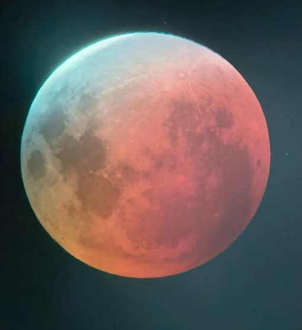
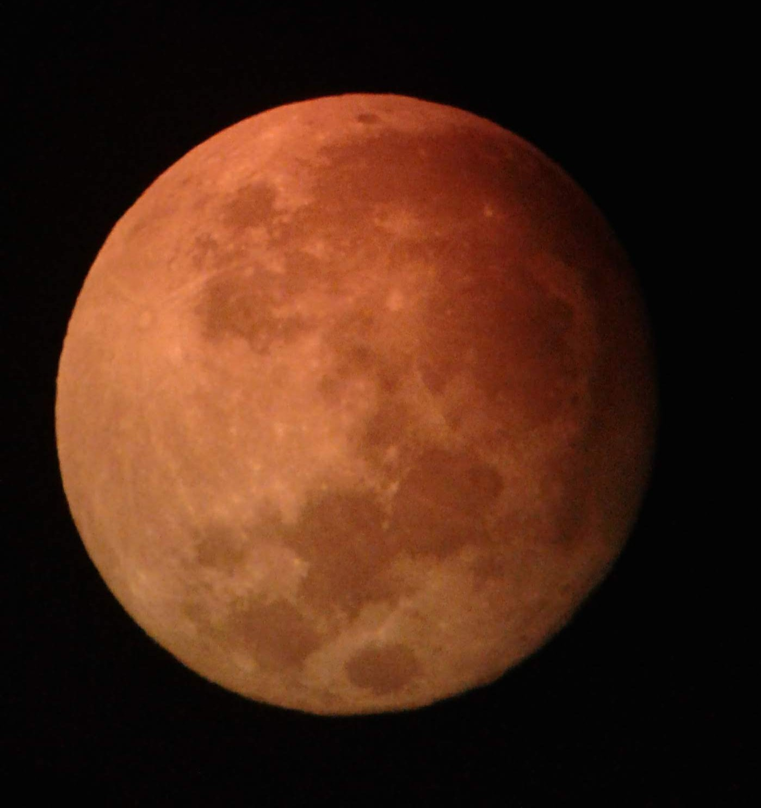
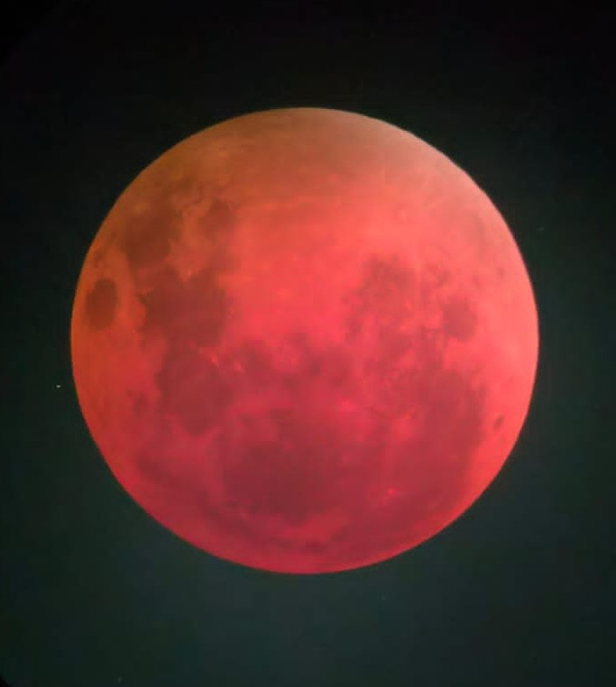
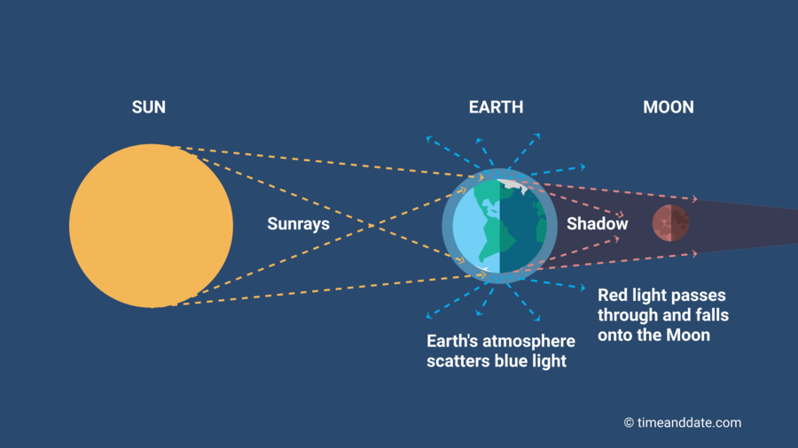

NASA unveils why the blood moon lights up the sky in red 🌚
A blood moon is one of the most striking celestial events, captivating skywatchers across the globe. During a total lunar eclipse, the Earth moves directly between the Sun and the Moon, casting its shadow across the lunar surface. This alignment transforms the Moon into a fiery red orb, inspiring myths, legends, and awe for centuries.
According to NASA, the red colour appears because sunlight passing through Earth's atmosphere is scattered. Shorter blue wavelengths are filtered out, while longer red wavelengths reach the Moon, giving it the characteristic crimson glow. Additional factors, such as atmospheric dust, volcanic activity, or moisture, can intensify the red hue, making each blood moon unique.
While some cultures have historically linked the blood moon to omens, the science is clear: it is a natural phenomenon resulting from celestial mechanics and atmospheric physics. In this article, we explain why the Moon turns red during a total lunar eclipse, what causes this striking effect, and how observers can safely experience this breathtaking spectacle.



A blood moon occurs when the entire Moon passes through Earth's darkest shadow, the umbra, during a total lunar eclipse. Unlike partial eclipses, where only part of the Moon is obscured, a total eclipse fully immerses the Moon in shadow, creating a vivid red appearance.
The crimson colour results from Rayleigh scattering, a process in which shorter blue wavelengths of sunlight are filtered by Earth's atmosphere, while longer red wavelengths pass through and illuminate the Moon. Each eclipse is slightly different depending on atmospheric conditions, which means no two blood moons look exactly alike.

The blood moon's red hue is a result of the same phenomenon that causes sunsets to appear red. As sunlight passes through Earth's atmosphere, it is scattered in all directions. This scattering is more pronounced for shorter wavelengths of light (blue and violet), while longer wavelengths (red and orange) are less affected and continue on their path. During a lunar eclipse, when the Earth is positioned directly between the Sun and the Moon, the only light that reaches the Moon is this filtered red light, giving it a striking crimson appearance.
Factors like volcanic ash, wildfires, or heavy cloud cover can increase the intensity of the red glow. This natural filtering effect is entirely predictable and occurs every time the geometry of the Sun, Earth, and Moon aligns for a total lunar eclipse. Understanding this scientific mechanism demystifies the centuries-old fascination with the blood moon.
The next visible blood moon will occur on the night of 7-8 September 2025. This striking lunar eclipse will be observable across much of Asia, Australia, Europe, and Africa, offering a spectacular celestial show for millions of people. During the event, the moon will take on a reddish hue due to the Earth's shadow filtering sunlight through the atmosphere. Skywatchers and astronomy enthusiasts alike can look forward to this rare and beautiful natural phenomenon.
The totality phase, when the Moon is entirely within Earth's shadow, will last approximately 82 minutes. Skywatchers should check local timings for the eclipse and plan to secure a clear view.
Observing a blood moon is completely safe, unlike a solar eclipse, which requires eye protection. For the best experience:
Throughout history, the blood moon has held cultural and spiritual meaning. Ancient civilisations often saw it as an omen or a sign of change. While today we understand the scientific cause, the phenomenon continues to inspire wonder and curiosity, reminding us of the beauty and vastness of our universe.
The blood moon is a breathtaking reminder of the intricate dance between celestial bodies and Earth’s atmosphere. Its red glow is a natural result of Rayleigh scattering and atmospheric conditions. Next time a total lunar eclipse occurs, observers can appreciate the blood moon not as a supernatural omen, but as a spectacular scientific event.
Understanding the mechanics behind this phenomenon enhances the experience and deepens appreciation for the wonders of the night sky.